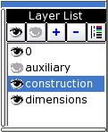
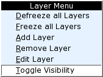
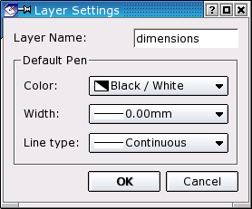

|
||
 |
||


11 Layers
Layers are a useful concept for organizing drawings. It's worth learning how to work with layers - it will save you a lot of time especially when drafting more complex constructions. This chapter will introduce you into the concepts of layering and show you how QCad lets you manage the layers of your drawing.
Every drawing contains at least one layer: layer '0'. Additional layers can be created by the user at any time they are required. However, it's recommended to plan a drawing and to create all necessary layers with the correct attributes before starting to draft. The number of layers for a QCad drawing is not limited. Every entity of your drawing is placed on exactly one layer and a layer can contain an unlimited number of entities.
A Layer can be frozen to make all entities on it invisible. This way it is easily possible to temporarily hide all dimensions, texts or auxiliary constructions for a print out or to get a clearer overview of a complex drawing.
The current layer is the layer you are working on. It is highlighted in the layer list (Figure 14). Newly created entities are placed on the current layer.
Layers can be controlled from the layer menu or in the layer list which is usually shown at the right in the QCad application window (see Figure 14).

Figure 14: Layer list.
In Figure 14 the current layer is "construction". The eye icon at the left side of each layer name indicates whether the layer is currently visible or invisible (frozen). In this example, layer "auxiliary" is frozen, the others are visible.
Changing the Visibility of a Layer
The visibility of a layer can be changed by either double-clicking on it or by right-clicking on it and choosing "Toggle Visibility" from the context menu (Figure 15).

Figure 15: Context menu of the layer list.
Changing the Visibility of all Layers
Toolbar:
Menu:
Layer - Defreeze All
Layer - Freeze All
Hotkey:
th*, fr*
The two buttons shown above can be used to defreeze (thaw) or freeze all layers at once, which comes in handy when working with a drawing that has many layers. The same function is also available from the context menu.
Adding New Layers
Toolbar:
Menu:
Layer - Add Layer
This command creates a new layer. The layer dialog is shown where you can specify the name for the new layer and adjust its attributes (Figure 16).

Figure 16: Dialog for creating new layers.
Deleting Layers
Toolbar:
Menu:
Layer - Remove Layer
You can delete the current layer with this command. Please note that all entities on that layer will be deleted as well. This command, unlike most other commands, can't be undone. However, if entities have been deleted with the layer, they will reappear on layer '0' if the action is undone. Layer '0' can never be deleted.
Editing Layer Attributes
Toolbar:
Menu:
Layer - Edit Layer
With this command you can trigger the same dialog that you used to create new layers (Figure 16). Use this to change the layer name or attributes. The name of the layer '0' cannot be changed.
|